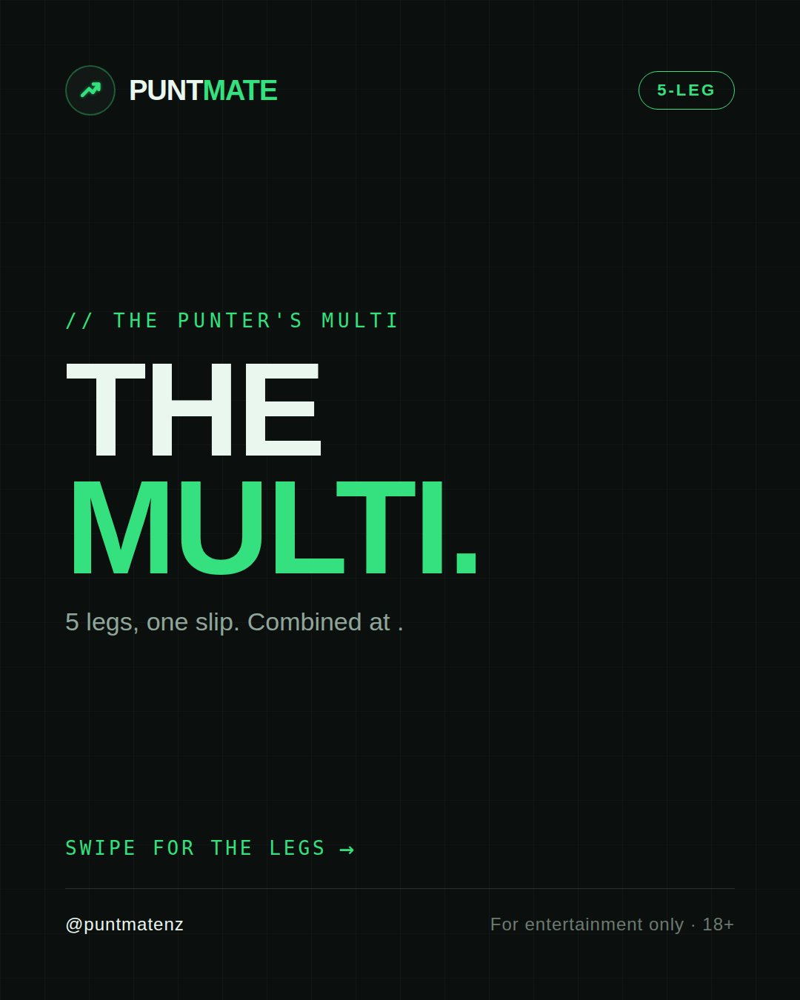
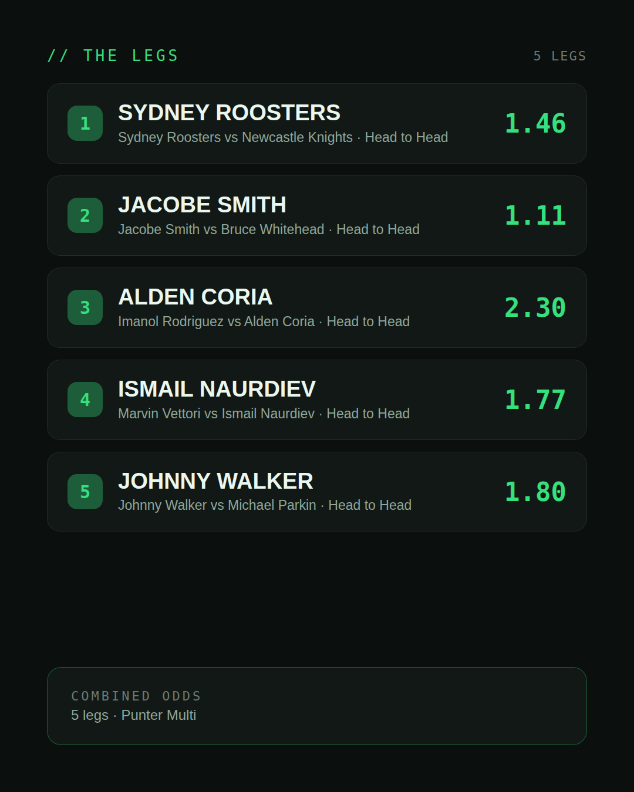
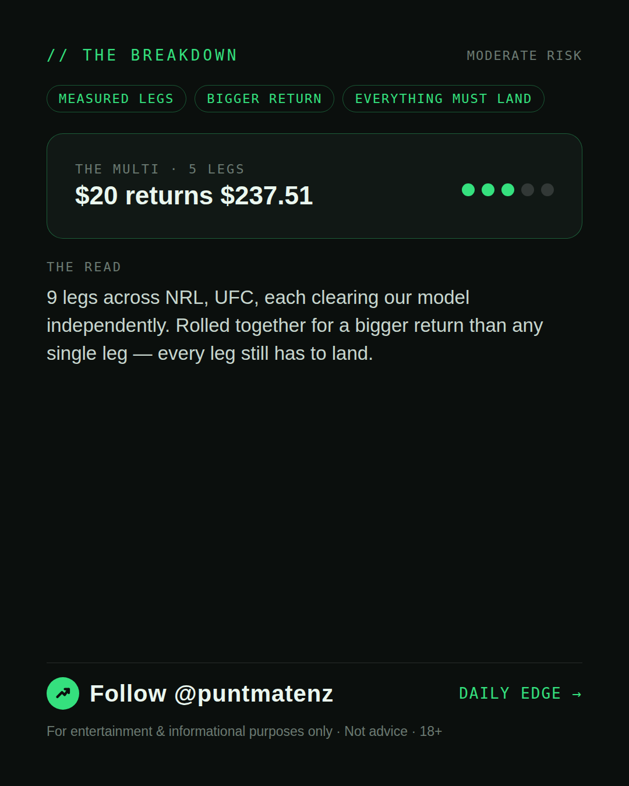

*🎯 PUNTMATE NZ — THE PUNTER'S MULTI* _A measured one: today produced multiple selections that each stand on their own as Investor/Punter-tier picks. Rolled together they pay well beyond any single leg — every leg still has to land, so this is a bigger swing than the day's single pick, not a certainty._ *Leg 1:* Sydney Roosters vs Newcastle Knights — SYDNEY ROOSTERS @ 1.46 (Head to Head) *Leg 2:* Jacobe Smith vs Bruce Whitehead — JACOBE SMITH @ 1.11 (Head to Head) *Leg 3:* Imanol Rodriguez vs Alden Coria — ALDEN CORIA @ 2.30 (Head to Head) *Leg 4:* Marvin Vettori vs Ismail Naurdiev — ISMAIL NAURDIEV @ 1.77 (Head to Head) *Leg 5:* Johnny Walker vs Michael Parkin — JOHNNY WALKER @ 1.80 (Head to Head) *Leg 6:* Ateba Gautier vs Roman Kopylov — ATEBA GAUTIER @ 1.46 (Head to Head) *Leg 7:* Natalia Silva vs Wang Cong — NATALIA SILVA @ 1.50 (Head to Head) *Leg 8:* Damian Pinas vs Andrey Pulyaev — DAMIAN PINAS @ 1.20 (Head to Head) *Leg 9:* Lucas Armand vs Anthony Wint — ANTHONY WINT @ 1.21 (Head to Head) *Combined: 37.76* *BET TYPE: PUNTER* One leg fails, the lot fails. ────────────────── ⚠️ For entertainment & informational purposes only. Not advice. 18+.
(see per-tier text above — no single Instagram caption for a weekend-multi-only post)
| has_pick | False |
| is_weekend_multi | True |
| pick_id | 2026-10-01_weekend_multi |
| post_date | 2026-10-01 |
| run_id | 36938182545 |
| generated_at | 2026-10-01T23:01:24.208315+00:00 |
| workflow_state | GENERATED |
| has_punter_multi | True |
| punter_multi_carousel_paths | ['data/review/2026-10-01_weekend_multi/punter_multi_cover.png', 'data/review/2026-10-01_weekend_multi/punter_multi_legs.png', 'data/review/2026-10-01_weekend_multi/punter_multi_breakdown.png'] |
| punter_multi_carousel_urls | ['https://raw.githubusercontent.com/kingofthecastle24/puntmate/main/data/cards/2026-10-01_Weekend_Multi_night_punter_multi_1_cover.png', 'https://raw.githubusercontent.com/kingofthecastle24/puntmate/main/data/cards/2026-10-01_Weekend_Multi_night_punter_multi_2_legs.png', 'https://raw.githubusercontent.com/kingofthecastle24/puntmate/main/data/cards/2026-10-01_Weekend_Multi_night_punter_multi_3_breakdown.png'] |
| has_gambler_multi | False |
| has_degenerate_multi | False |
| intended_platforms | ['instagram_feed', 'telegram'] |